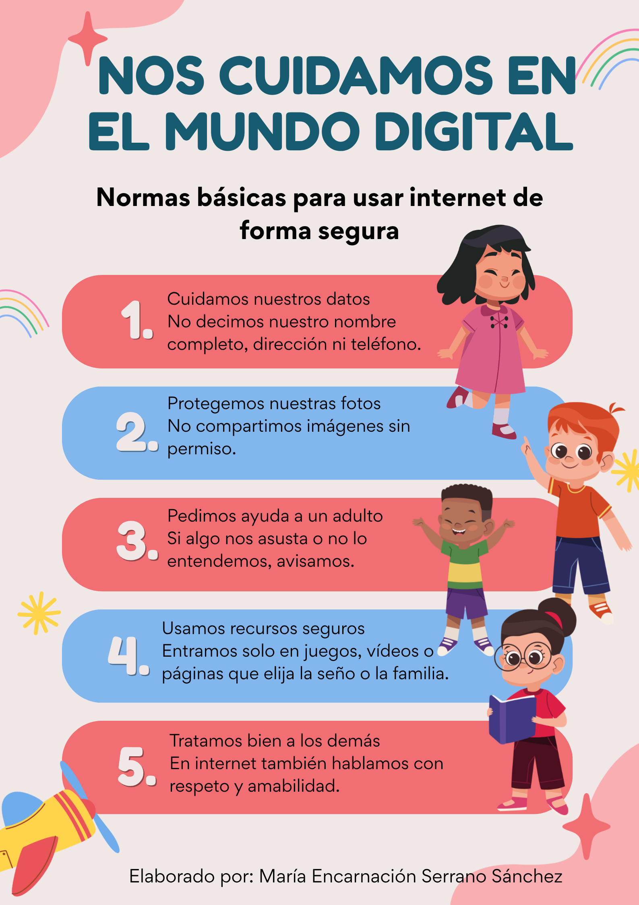

Protección de datos y derechos digitales
En esta situación de aprendizaje se promoverá un uso seguro, responsable y adecuado de los recursos digitales, adaptado al nivel madurativo del alumnado de 3 años.Las imágenes, vídeos o producciones del alumnado solo se utilizarán siguiendo las normas del centro y con la autorización correspondiente de las familias.
Como apoyo visual, se ha diseñado un cartel mediante la herramienta Canva con normas básicas de uso seguro de internet adaptadas a Educación Infantil. Este recurso se utilizará en la asamblea para trabajar de forma visual y comprensible hábitos de seguridad digital, favoreciendo la interiorización de normas a través de imágenes, lenguaje sencillo y repetición.
Este recurso responde a los principios del Diseño Universal para el Aprendizaje (DUA), facilitando el acceso a la información mediante múltiples formas de representación.
Durante las actividades del proyecto, el alumnado utilizará recursos visuales y audiovisuales seccionados por la docente. No se pedirá al alumnado que introduzca datos personales ni que navegue libremente por internet. Las interacciones digitales se realizarán siempre con supervisión adulta.
Además, se trabajarán hábitos básicos de ciudadanía digital, como:
-Cuidar la información persona.
-No compartir datos personales.
-Respetar la imagen de los demás.
-Utilizar los recursos digitales con acompañamiento del profesorado.
-Fomentar un uso responsable, seguro y saludable de la tecnología.
El profesorado seleccionará previamente los recursos digitales adecuados a la edad del alumnado y garantizará entornos de aprendizaje seguros, accesibles e inclusivos.
Como apoyo visual, he diseñado un cartel mediante la herramienta Canva con normas básicas de uso seguro de internet adaptadas a Educación Infantil. Este recurso se utilizará en la asamblea para trabajar de forma visual y comprensible hábitos de seguridad digital, favoreciendo la interiorización de normas a través de imágenes, lenguaje sencillo y repetición.
Este recurso responde a los principios del Diseño Universal para el Aprendizaje (DUA), facilitando el acceso a la información mediante múltiples formas de representación.

Cartel de normas básicas para el uso seguro de internet en Educación Infantil. Elaboración propia con Canva.